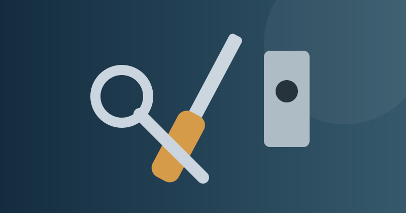

Información y asistencia
Guías originales para prevenir problemas de acceso y mejorar la seguridad de tu propiedad. Seleccioná una de las páginas para conocer los detalles y contactar con Servihogar.
Llamar 094 970 715WhatsAppGuías originales para prevenir problemas de acceso y mejorar la seguridad de tu propiedad.
Llamar 094 970 715WhatsApp
Guías originales para prevenir problemas de acceso y mejorar la seguridad de tu propiedad. Seleccioná una de las páginas para conocer los detalles y contactar con Servihogar.
Llamar 094 970 715WhatsApp
Cerraduras STAR en La Blanqueada: mantenimiento y cambio. Consejos de Servihogar para vecinos de La Blanqueada, Montevideo.
Cuánto cuesta un cerrajero en La Blanqueada. Consejos de Servihogar para vecinos de La Blanqueada, Montevideo.

Llaves dentro de casa en La Blanqueada: qué hacer. Consejos de Servihogar para vecinos de La Blanqueada, Montevideo.

Mudanza en La Blanqueada: cuándo renovar las llaves. Consejos de Servihogar para vecinos de La Blanqueada, Montevideo.
Puerta trancada en La Blanqueada: señales de desgaste. Consejos de Servihogar para vecinos de La Blanqueada, Montevideo.
Seguridad de comercios en La Blanqueada: control de llaves. Consejos de Servihogar para vecinos de La Blanqueada, Montevideo.
Llaves de auto en La Blanqueada: copias y urgencias. Consejos de Servihogar para vecinos de La Blanqueada, Montevideo.